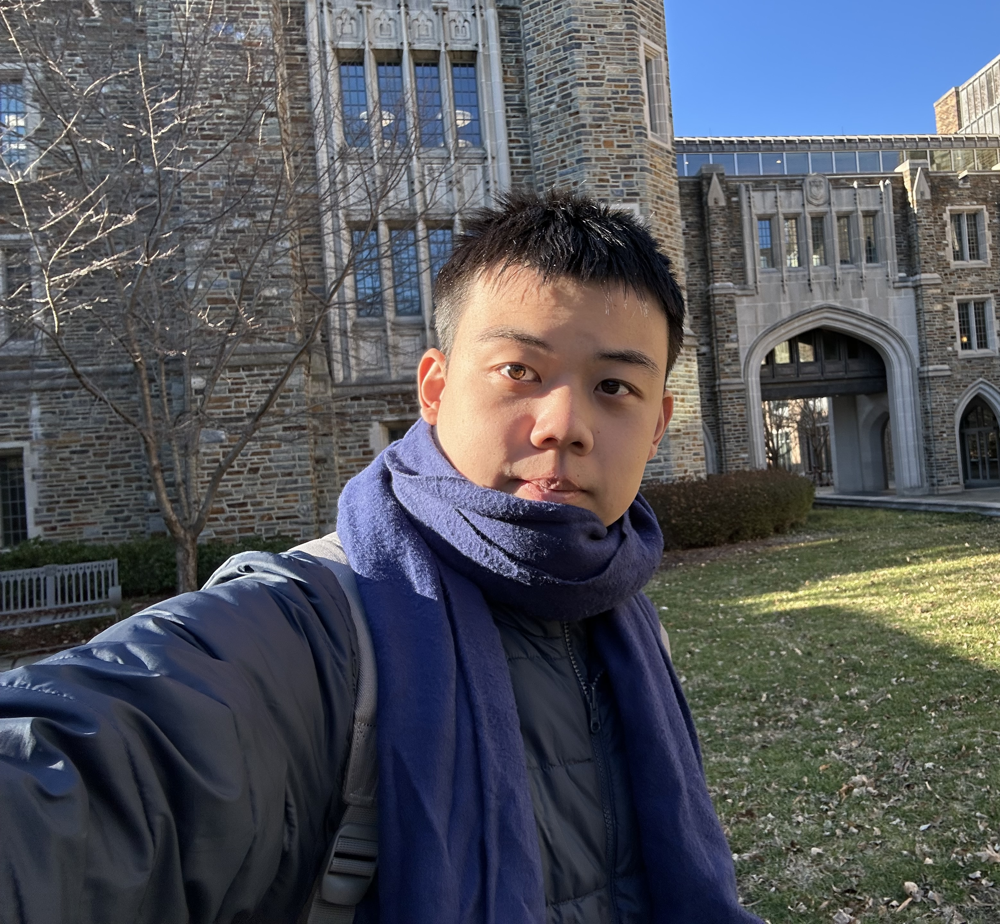
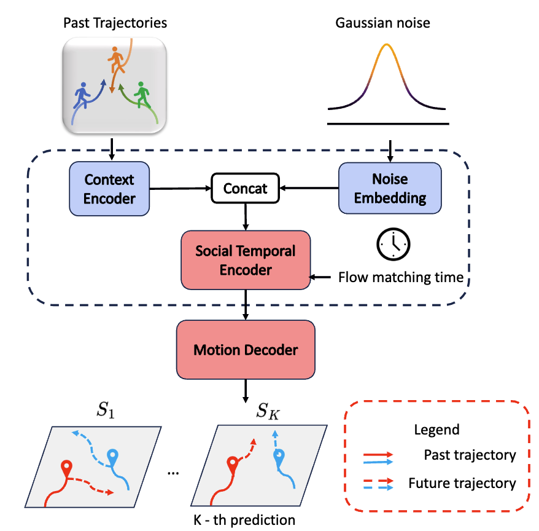
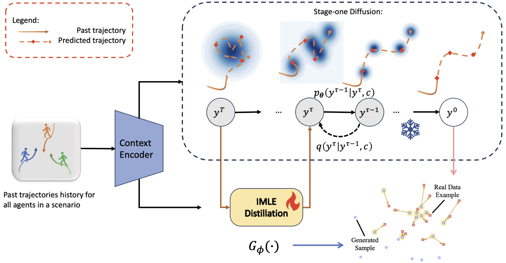
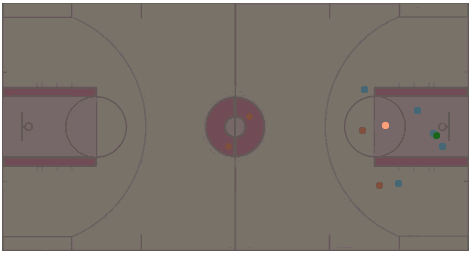
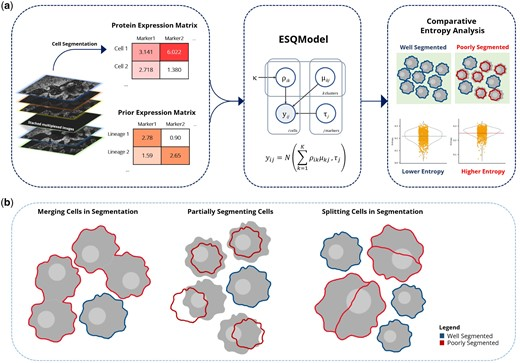
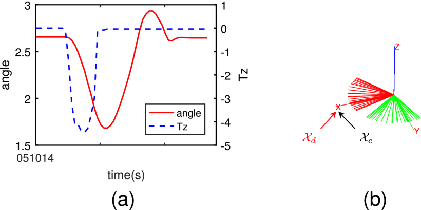
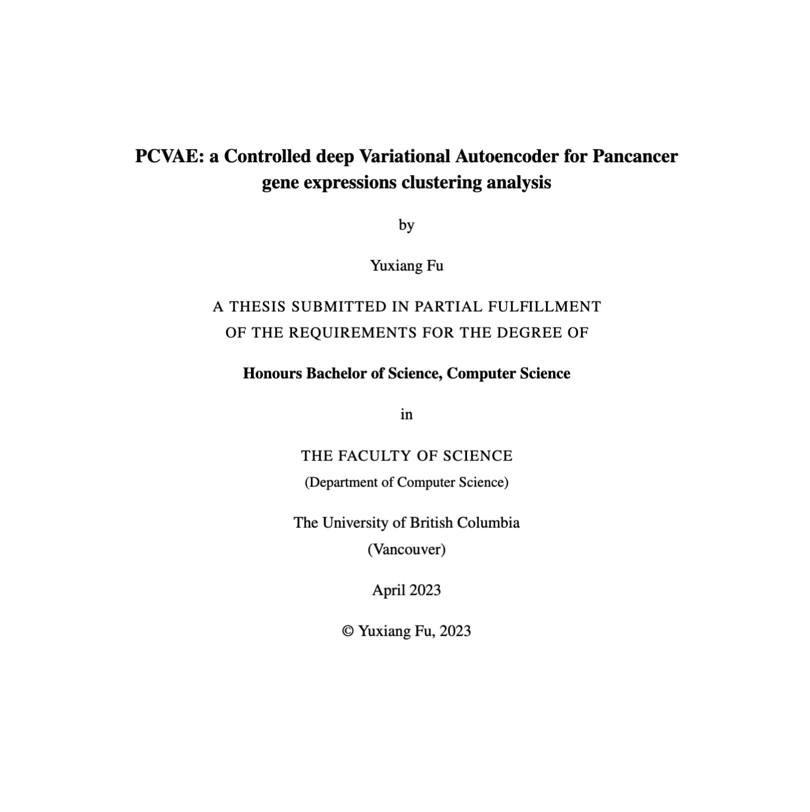
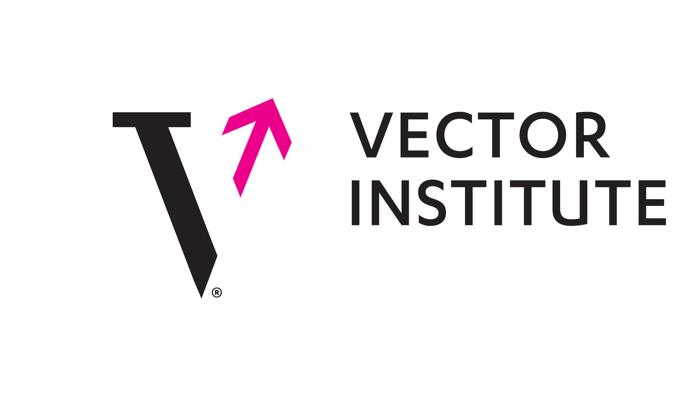
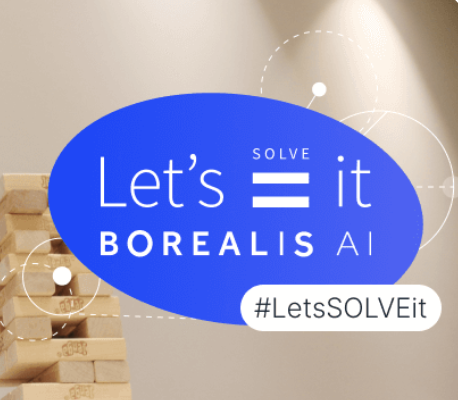

|
Yuxiang Fu I am a MASc student in the ECE department at UBC, and a member in DSL lab, advised by Prof. Lele Wang and Prof. Renjie Liao. Previously, I received an Honours degree in CS from UBC under the supervision of Prof. Andrew Roth. During my undergraduate studies, I am fortunate to intern at both the BCCRC Roth Lab and Vector Institute. Email / CV / LinkedIn / Google Scholar / Github |

"Grant that I may always desire more than I can accomplish." -- Michelangelo |
{kind=link}
|
|
I am interested in deep learning, generative AI, and self-driving, with a focus on the geometry and structure of diverse data modalities. My research seeks to elucidate underlying data patterns while leveraging their representations to enable robust, reliable, and efficient inference, bridging theoretical insights with practical applications. Some papers are highlighted. |
|

|
MoFlow: One-Step Flow Matching for Human Trajectory Forecasting via Implicit Maximizing Likelihood Estimation based Distillation
Yuxiang Fu, Qi Yan, Ke Li, Lele Wang, Renjie Liao CVPR 2025 Project Page / arXiv / Paper / Video / Code / Bibtex We present a novel Motion prediction conditional Flow matching model, termed MoFlow, to generate K-shot future trajectories for all agents in a given scene. In addition, by leveraging the Implicit Maximum Likelihood Estimation (IMLE), we propose a novel distillation method for flow models that only requires samples from the teacher model. |
|   |
Stochastic Trajectory Generation with Diffusion via IMLE Distillation
Yuxiang Fu, Qi Yan, Ke Li, Lele Wang, Renjie Liao CRV 2024 Workshop, Oral Presentation Slides / Poster We introduce TGD, a diffusion-based human trajectory generation model, along with a trainable student model leveraging the IMLE scheme to align with the teacher diffusion model’s distribution at any intermediate diffusion timestamp. |
|  |
ESQmodel: biologically informed evaluation of 2-D cell segmentation quality in multiplexed tissue images
Eric Lee, Dongkyu Lee, Wayne Fan, Andrew Lytle, Yuxiang Fu, IMAXT Consortium, David W Scott, Christian Steidl, Samuel Aparicio, Andrew Roth Bioinformatics 2024 Journal Article / bioRxiv Accurate single-cell segmentation is essential for spatial omics analysis, yet existing methods rely heavily on expert-driven annotations and separate statistical or biological evaluation strategies, highlighting the need for a unified assessment approach. ESQmodel alleviates this limitation. |
|  |
Rotational Impedance Formulation in a Unified Viewpoint of Lie Algebra
Jian Fu, Siyuan Shen, Yuxiang Fu, Kui Xiang IEEE Robotics and Automation Letters 2025 We aim to elucidate the fundamental nature of rotational impedance and presents a comprehensive, unified framework for formulating rotational impedance using Lie algebra and Noether's theorem. In particular, we utilized quaternions and rotation matrices to represent rotational motion within our proposed framework to ensure theoretical validity. |
|

|
PCVAE: a Controlled deep VAE for Pancancer
gene expressions clustering analysis
Yuxiang Fu Content A slight tweak of the variational autoencoder that controls the primary tissue effect of the bulk RNA sequencing data from PCAWG/ICGC dataset. PCVAE offers the ability to uncover novel connections across heterogeneous cancers in a site-effect-free environment. |
|  |
Vector Institute for AI
2024.01 - 2024.05 Research Intern Research Advisor: Prof. Geoff Pleiss |
|  |
Borealis AI Let's Solve It
2023.09 - 2023.12 Team Leader, BinAry Flow Jedi Research Advisor: Dr. Raquel Aoki News / Project / Slides |
|
|
Google CSRMP
2023.09 - 2023.12 Program Mentee Program Advisor: Dr. Hyodong Lee |
|
BC Cancer Research Center
2022.05 - 2023.05 Research Intern Research Advisor: Prof. Andrew Roth Mini Conference Poster |
|
|
Teaching Assistant
2021.01 - Present CPSC 210 x 6, CPSC 330, CPEN 455 |
|
|
|
This webpage is build based on Jon Barron's website and deployed on Github Pages. Last updated: © 2025 Yuxiang (Felix) Fu |